flowchart LR
A(Desenvolvimento \n tecnológico) --> C{Obtenção de uma \n grande quantidade de dados}
B(Barateamento do custo \n das novas tecnologias) --> C{Obtenção de uma \n grande quantidade de dados}
6 Bancos de Dados Biológicos
Nesta aula veremos:
O que são bancos de dados;
Para que servem;
Classificação dos bancos de dados;
Quais os principais bancos de dados utilizados na Biologia de Sistemas.
6.1 O que são Bancos de Dados Biológicos?
“São grandes bibliotecas contendo informações sobre as ciências da vida, coletadas de experimentos científicos, literatura publicada, tecnologias de alto-desempenho e análises computacionais.” – Adaptado de Attwood et al., 2011
6.1.1 Os primeiros Bancos de Dados Biológicos.
- Margareth Dayhoff e o estudo evolutivo de sequências proteicas
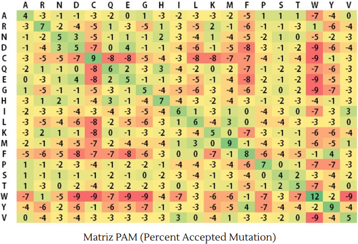
- GenBank
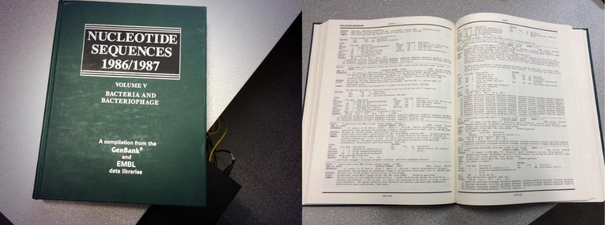
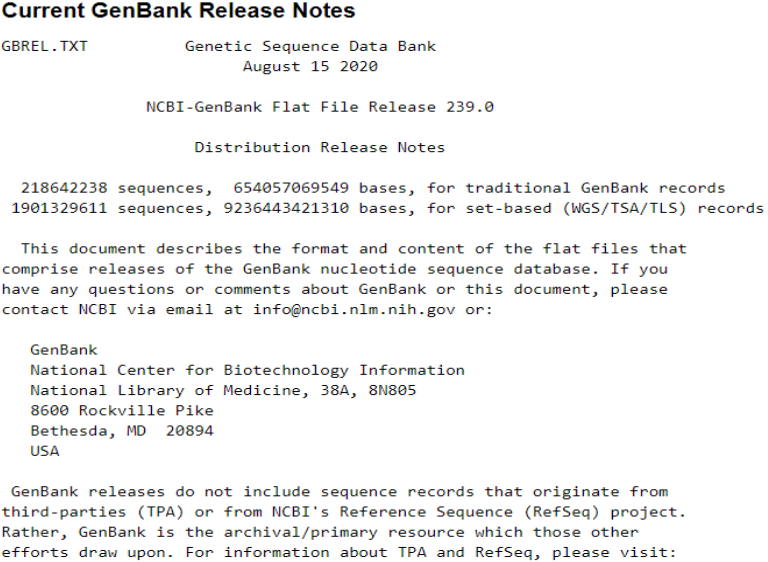
6.1.2 Como surgiram os Bancos de Dados?
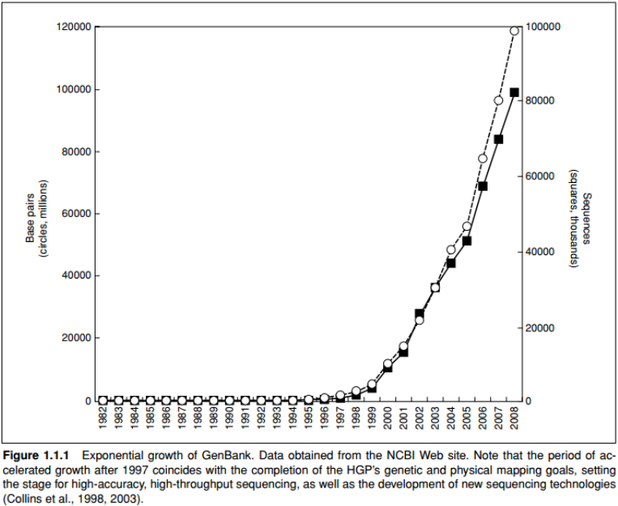
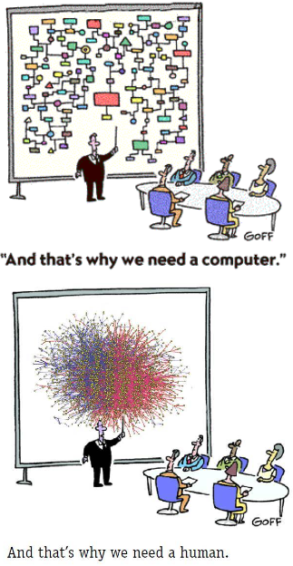
6.1.3 Para que servem?
Armazenar, organizar e compartilhar dados de forma estruturada com o objetivo de facilitar a obtenção e visualização de dados;
Promover interfaces de desenvolvimento a fim de que seja possível integrar as informações entre os diferentes bancos de dados.
Integração dos “omics”;
flowchart LR A(Genomics) <--> B(Transcriptomics) A(Genomics) <--> C(Proteomics) A(Genomics) <--> D(Glycomics) A(Genomics) <--> E(Metabolomics) B(Transcriptomics) <--> C(Proteomics) B(Transcriptomics) <--> D(Glycomics) B(Transcriptomics) <--> E(Metabolomics) C(Proteomics) <--> D(Glycomics) C(Proteomics) <--> E(Metabolomics) D(Glycomics) <--> E(Metabolomics)
- “Big Data” na biologia: em TI, refere-se a um grande conjunto de dados armazenados.
6.1.4 Classificação dos Bancos de Dados Biológicos
- Cobertura de dados
- Abrangente: possui diferentes tipos de dados de diferentes espécies
- Especializado: possui um único tipo de dado para um determinado organismo.
- Nível de biocuradoria
- Primário: Possui os dados brutos provenientes de alguma técnica/experimento.
- Secundário: Possui informações curadas
- Método de biocuradoria
- Curado por especialistas: Normalmente, um único grupo é responsável pela tarefa
- Curado pela comunidade: vários pesquisadores colaboram para a curadoria
- Tipo de dados
- DNA, RNA, proteínas, dados de expressão (single-cell, RNA-seq, microarray), vias metabólicas, redes de interação entre biomoléculas, doenças, drogas, químicos, etc.
6.1.5 Informações contidas nos Bancos
| Tipo de Banco | Tipo de Informação | Exemplo |
|---|---|---|
| Bibliografia | Literatura científica publicada | PUBMED |
| Taxonomia | Classificação Taxonômica | TimeTree |
| Ácidos Nucleicos | Informações sobre sequências de DNA/RNA | GenBank, ENA |
| Proteína/Proteômica | Informações sobre estrutura funcional de proteínas | UniProt |
Domínios Funcionais e Motivos |
Classificação de proteínas em famílias | PFAM, CCD |
Enzimas e rotas metabólicas |
Rotas Bioquímicas | Reactome, KEGG Pathway, Gene Ontology |
| Ortologia | Informações sobre homologia de genes | STRING, KEGG Orthology |
6.2 Bancos de Dados mais utilizados na Biologia de Sistemas
6.2.1 KEGG – Kyoto Encyclopedia of Genes and Genomes
Foi originalmente desenvolvida como um banco de dados integrado para a interpretação de dados biológicos de genomas completamente sequenciados, tentando criar mapas de vias a partir dos genes recém-mapeados.
Com o tempo, esta plataforma tornou-se amplamante usada não apenas para a análise de dados genômicos, mas também para análise de transcriptômica, proteômica, glicômica, metabolômica, metagenômica, etc.
É um dos repositórios mais utilizados, devido ao fato de que as informações nele contidas são curadas manualmente e frequentemente.
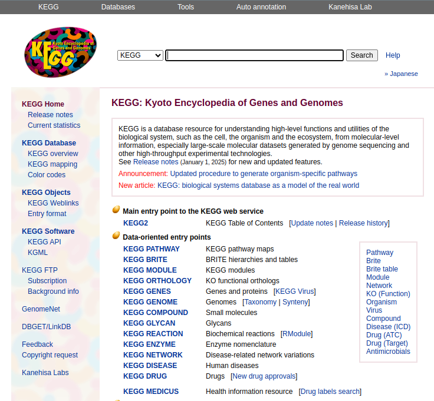
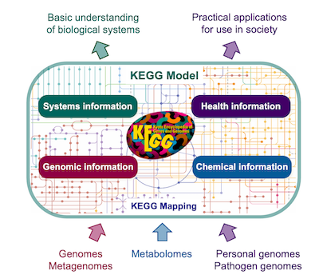 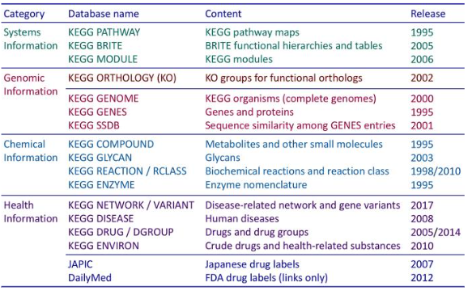
6.2.1.1 KEGG Pathway
- Conjunto de vias manualmente curadas que integram todas as informações contidas nos outros bancos de dados do KEGG.
- As vias são classificadas em:
- Metabolismo
- Processamento da informação genética
- Processamento da informação ambiental
- Processos celulares
- Sistemas de organismos
- Doenças humanas
- Desenvolvimento de drogas
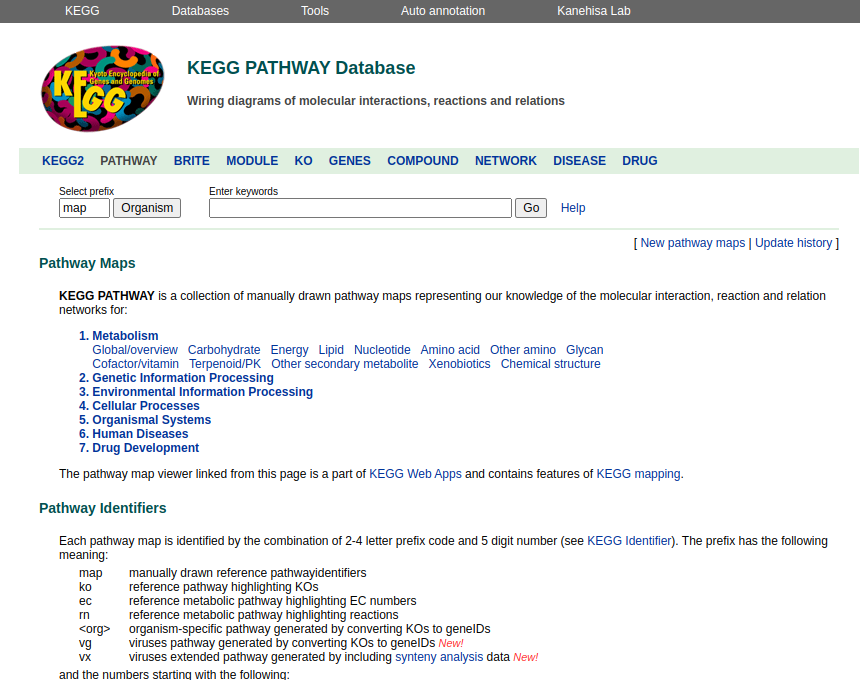
6.2.1.2 KEGG Module
- O KEGG Module funciona como o KEGG Pathway, porém possui informações mais detalhadas sobre um determinado módulo funcional de uma via metabólica.
- Rotas
- Complexos estruturais
- Funcionais
- De assinatura
6.2.1.3 KEGG Orthology (KO)
- Sua proposta é agrupar os genes contidos no KEGG Genes de acordo com similaridades na sequência e dados do KEGG Pathway, Module e BRITE.
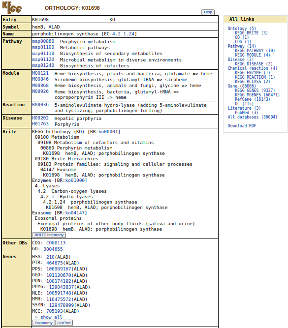
6.2.2 GO - Gene Ontology
- É um projeto colaborativo que busca estabelecer descrições consistentes para produtos gênicos.
- Surgiu como uma forma de “padronizar” os termos biológicos utilizados para descrever as funções dos produtos de genes de todas as espécies.
- Possui um vocabulário de termos definidos, sendo dividido em três domínios:
- Componentes celulares: partes da célula ou do ambiente extracelular onde o produto gênico fica localizado
- Função molecular: atividade do produto gênico em nível molecular
- Processo biológico: rota metabólica que o produto gênico faz parte, por exemplo.
- GeneOntology
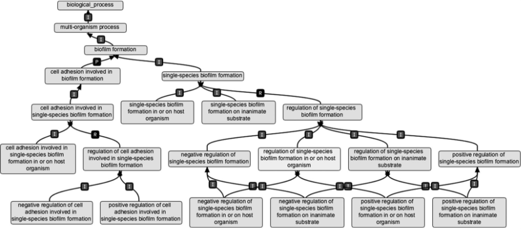
6.2.3 Reactome
- Base de dados curados de vias e reações na biologia;
- O Reactome utiliza o termo “reação” de forma mais ampla: inclui mudanças de estados de proteínas, como ligação, ativação, translocação e degradação;
- É integrado a outros bancos de dados (NCBI, Ensembl, UniProt, KEGG, GO, etc.);
- Utiliza uma ontologia própria para classificar as reações e processos metabólicos;
- Principal vantagem: muito interativo e didático!
- Reactome
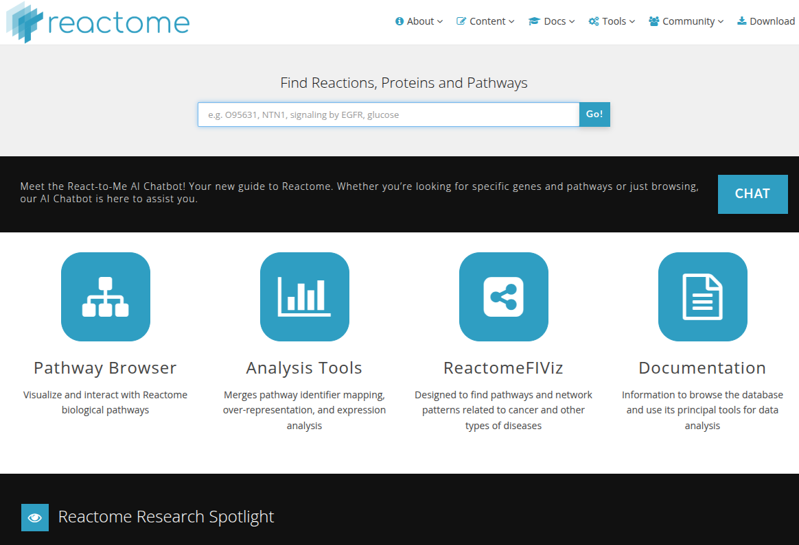
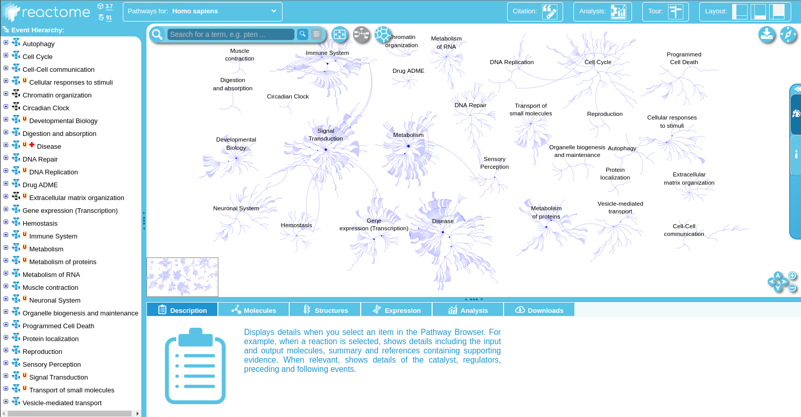
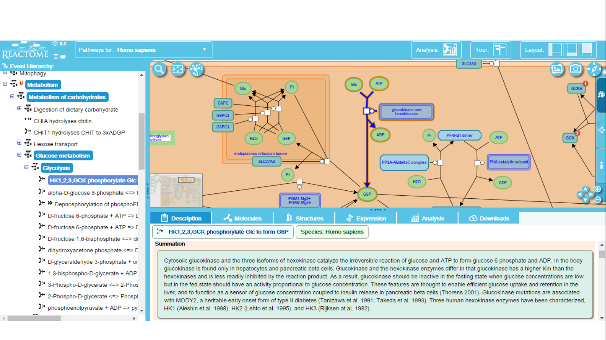
6.2.4 STRING
SearchTool for theRetrieval ofInteractingGenes/Proteins- É um dos principais bancos de dados de interação proteína-proteína
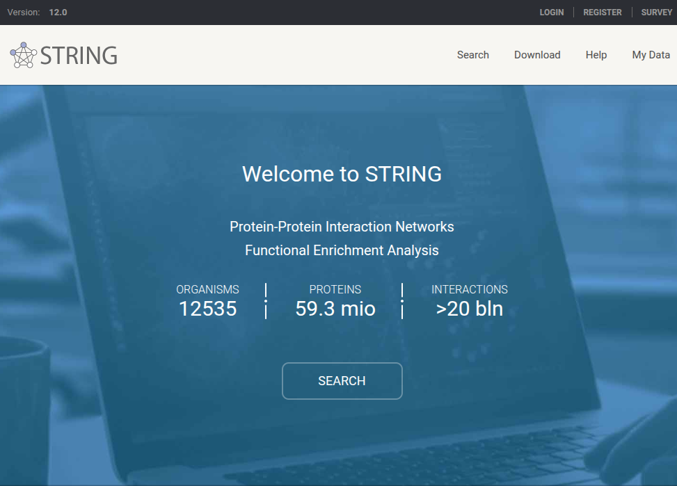 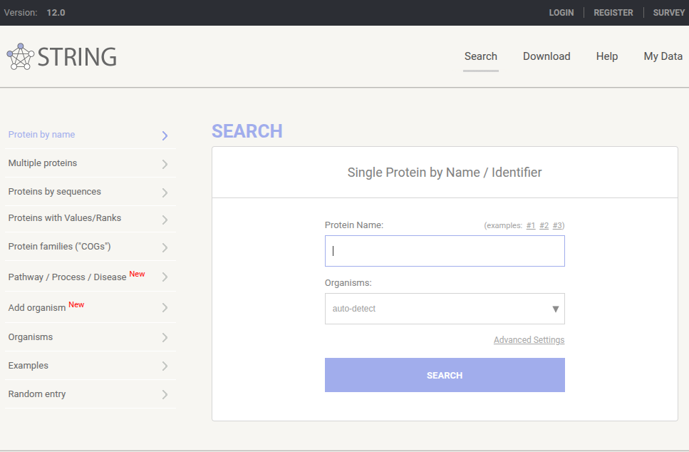
Utiliza informações experimentais, registros da literatura e anotações funcionais.
Basicamente, tem dois tipos de entradas:
- Busca de interações feitas por um determinado gene/proteína
- Busca de grupos de ortólogos de um ou mais genes/proteínas
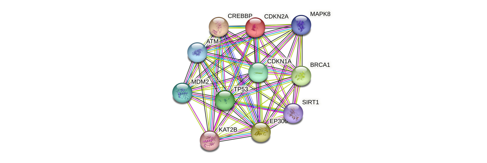 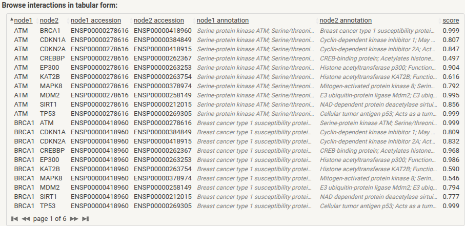
6.3 Bancos de Dados Primários - Buscando Dados Brutos para Reanálise
6.3.1 GEO Datasets - Gene Expression Omnibus Datasets
Banco de dados norte-americano, mantido pelo NCBI;
Contém dados de microarray e RNA-seq.
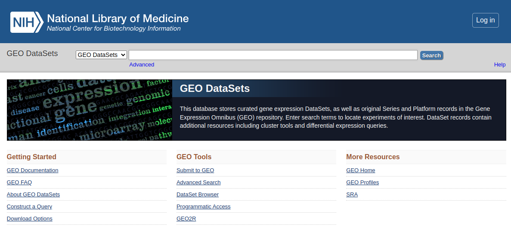 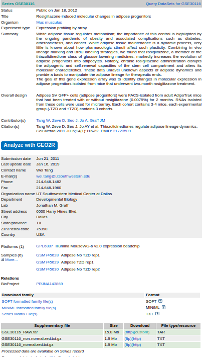
É possível fazer o dowload do dado bruto obtido do experimento e utiliza-lo nas análises.